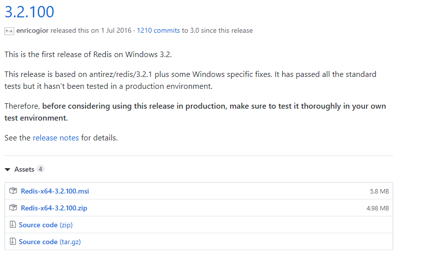
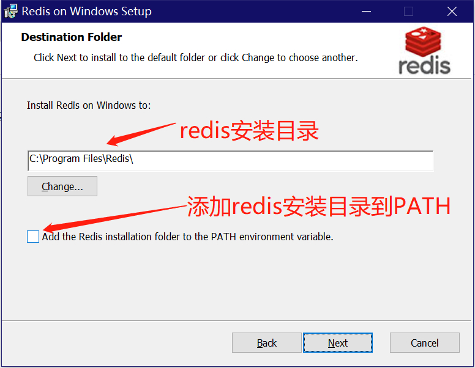
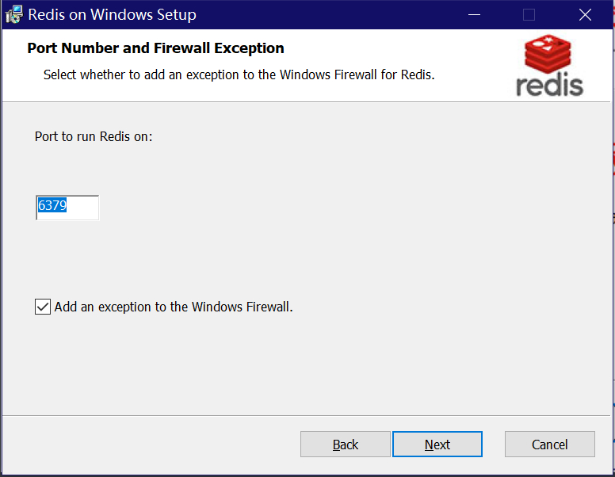
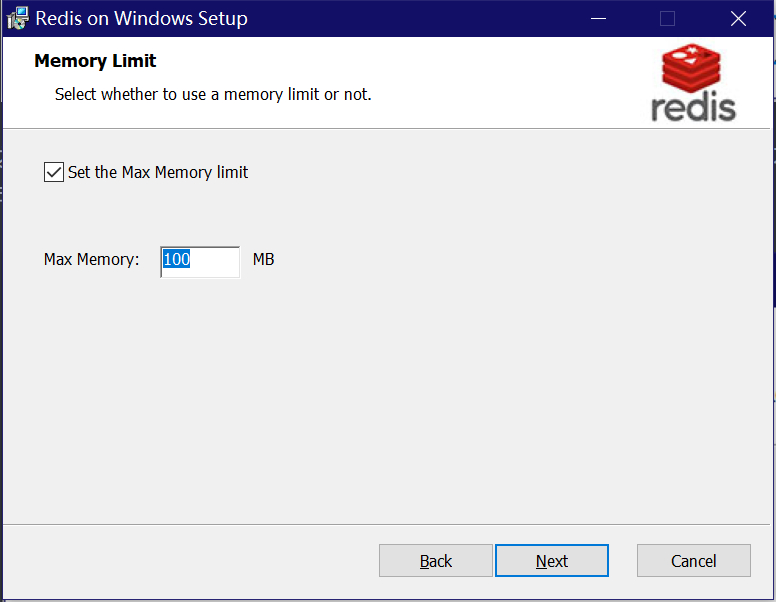
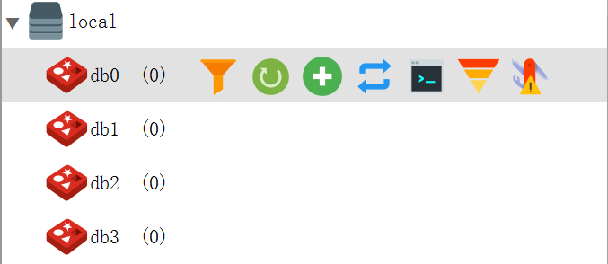

原文连接:https://www.cnblogs.com/ttlx/p/11611086.html
下载
github上下载最新(或者你需要的版本)的redis安装包，下载地址如下：
https://github.com/microsoftarchive/redis/releases
打开点击版本号，进入下载页面，我写这篇博客的时候最新版本是3.2.100。这里需要对不太熟悉redis的同学说明一下 windows 版的redis是由微软官网维护并发布的，所以版本和 https://github.com/antirez/redis 仓库的原版 redis 会不太一样，我写这篇博客的时候，redis官方最新版本是5.0.6。如果你想体验最新的特性，可以考虑在linux环境下安装。
好了，说回正题。打开 https://github.com/microsoftarchive/redis/releases/tag/win-3.2.100 页面可以看到如下四个文件。

对文件进行一个说明：
Redis-x64-3.2.100.msi ：图形化安装文件
Redis-x64-3.2.100.zip ：压缩文件安装包，需要解压安装
Redis-x64-3.2.100.zip ：.zip压缩格式源码
Redis-x64-3.2.100.tar.gz ：.gz压缩格式源码
这里我选择 .msi 的文件进行下载安装，如果你需要使用压缩文件解压安装，可以参考下面这篇文章：
https://blog.csdn.net/lamp_yang_3533/article/details/52024744
安装
双击安装文件，点击 Next 下一步，进入到如下页面的时候，需要选择你的安装位置，建议不要装在C盘。然后勾选上添加安装目录到 PATH 环境变量的选项。

选好之后选择 Next ，进入到选择端口的页面。redis默认是 6379 端口，如果你不想用 6379 或者 6379 已经被其他程序占用，可以修改成其他端口。下方添加到windows防火墙的选项保持默认就好。

选好之后点击Next，进入如下页面，设置redis最大内存限制。默认100MB内存，但是做后端的同学都知道这很可能是不够用的，所以可以改大一点，我这里修改成了1024MB。你可以根据自己的实际情况来更改设置。

选好之后再点击 Next ，然后点击 Install ，就会开始安装Redis了。安装完成之后点击 Finish 完成安装。
然后可以打开任务管理器，点击服务，查看服务列表中是否有一个名字叫做Redis的服务正在运行，如果有，说明安装并启动成功，如果没有或者未成功启动，请删除服务之后对照如上步骤重新安装。
删除redis服务命令为 sc delete 服务名 ，需要注意删除服务需要使用管理员身份打开命令行窗口执行命令。可以使用rdm等redis图形化管理界面连接redis并测试添加删除数据，默认是没有密码的，如果需要设置密码，可以在安装目录下的配置文件里设置。
